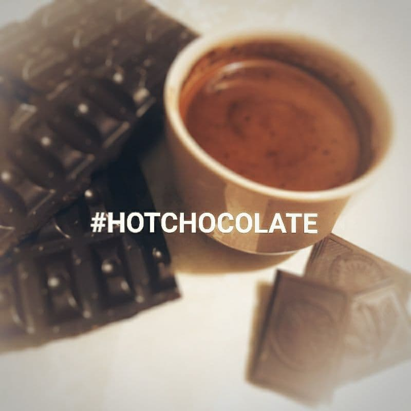
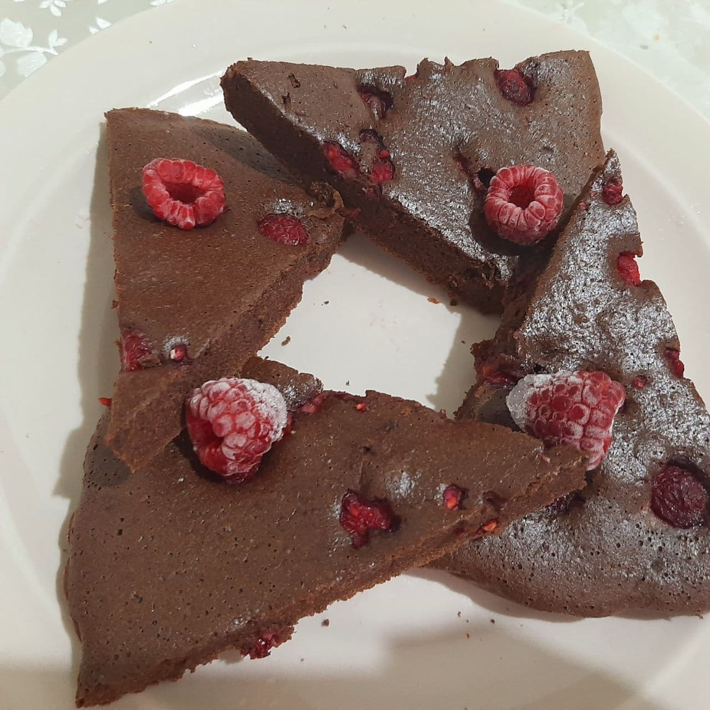

Issiq shokolad
Kerak bo'ladigan masalliqlar: - shokolad 30 gr, - sgushonka 2 choy qoshiq, - kakao 2 choy qoshiq, - shakar 1 choy qoshiq, - qaynagan issiq suv 150 gr
- Shokoladni eritib olinadi;
- Kakao va shakar qo'shib bir xil massaga kelguncha aralashtiriladi;
- So'ng sgushonka ta'bga ko'ra qo'shiladi;
- Ustidan issiq suv solib aralashtiriladi;
- Issiq shokoladimiz tayyor.

Brauni
Kerak bo'ladigan masalliqlar: - 3 ta tuxum, - o'simlik yog'i 2 osh qoshiq, - tuz 1 chimdim, - kakao 5 osh qoshiq, - shakar 3 osh qoshiq, - un 4 osh qoshiq, - razrixlitel 1 choy qoshiq
- Chuqurroq idishga 3 ta tuxumni chaqib tuz va shakar bilan aralashtiriladi;
- O'simlik yog'i va kakao solib bir xil massaga keltiriladi;
- Un va razrixlitelni elakdan otkazib so'ng tuxumli massaga qo'shiladi;
- Hamir bir xil konsistensiyaga kelguncha aralashtiriladi va suyuq hamir hosil bo'ladi;
- Tayyor massani pergament qolinga qolipga solib 25-30 daqiqa 170*C da pishirib olinadi.